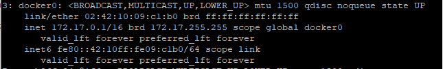
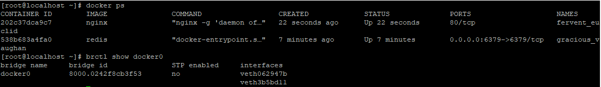
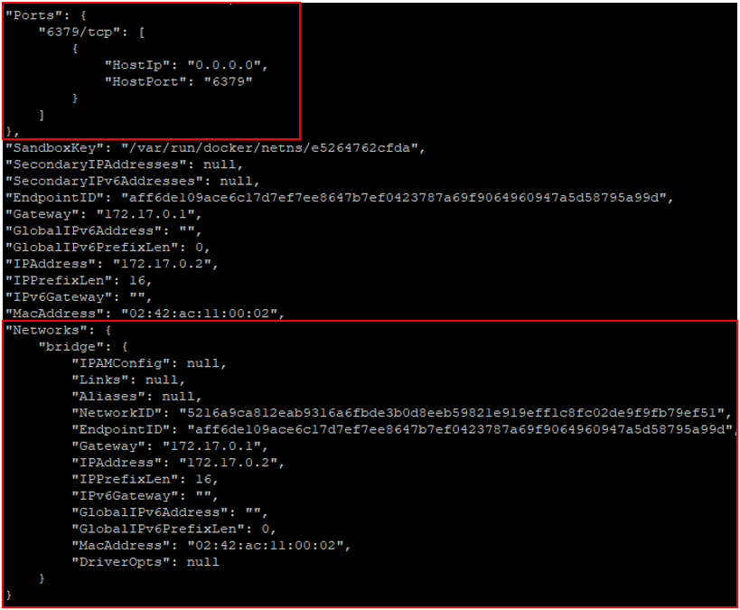
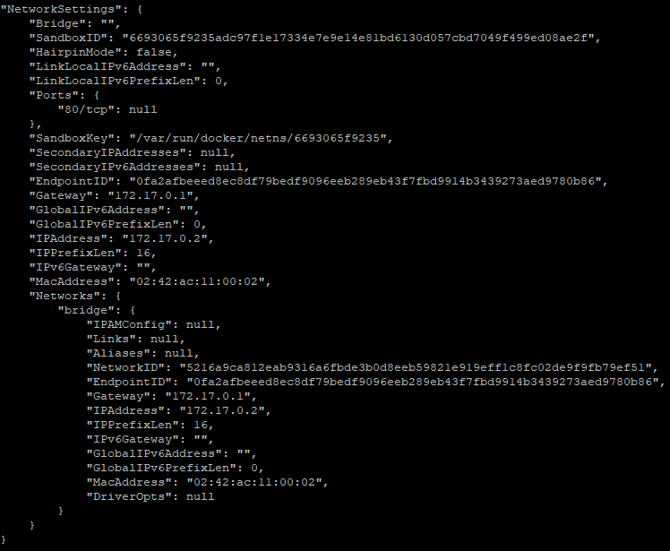
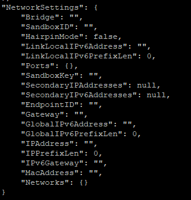
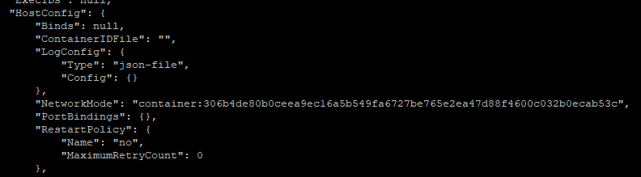
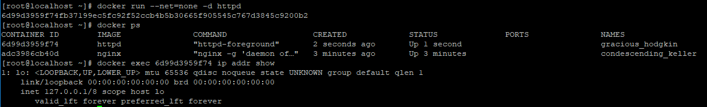

Docker Network 모드
Docker에서 제공하는 Network 모드는 총 4개 입니다. (추가적으로 2개의 모드가 더 있습니다. Overlay, Macvlan 모드가 있지만 Docker Swarm과 관련된 내용이므로 이번 장에서는 기술 하지 않겠습니다.)
- Bridge 모드
- Container 모드 (이것도 Bridge 모드의 일종)
- Host 모드
- none 모드
이번 장에서는 위 Network 모드에 대해 알아보도록 하겠습니다.
Bridge 모드
Docker에서 network 설정을 별도로 하지 않으면 Default로 작용하는 모드입니다. Docker가 설치되면 docker0라는 네트워크 인터페이스가 생성됩니다. (Virtual Interface)

위는 docker0 인터페이스를 바탕으로 각 Container와 Bridge 형식으로 엮어진 모습입니다.

Host OS에서 network interface를 검색해 보면 docker0라는 virtual interface를 확인할 수 있습니다.
docker0 interface의 특징
- IP는 자동으로 172.17.0.1로 설정
- IP는 DHCP로 할당받는 것이 아닌 Docker 내부로직에 의해 결정
- docker0는 virtual ethernet bridge
- L2 통신 기반
"docker bridge 모드는 같은 host 내에서만 사용 가능하다." 라는 제약이 있다.
즉, 다른 host(다른서버)와의 docker와는 통신이 불가능합니다.
왜냐하면 다른 서버가 docker0 인터페이스의 외부에 있기 때문에 그렇습니다.
docker0 interface와 Container의 연결 방식

위 이미지를 보면, 현재 Docker를 이용하여 redis와 nginx를 설치한 상태입니다. 두 번째 명령을 보면 brctl명령으로 docker0 interface에 연결된 interfaces가 2개 보입니다.
- veth062947b
- veth3b5bdll
container 2개가 bridge 방식으로 연결 되어 있기 때문에 veth~하는 interface가 생성되어있습니다. 위에 그림에서 보듯이 veth와 각 container 내부의 eth0 interface와 연결되어 있습니다.

Redis Container에 대해 docker inspect 명령을 날려보았습니다. 네트워크 설정 부분이 아래에 나오는데 Network 부분을 보시면 Gateway는 172.17.0.1이라 되어 있습니다. 이 ip 주소는 docker0 interface의 ip주소입니다. 따라서 docker0의 bridge로 연결되어 172.17.0.2라는 내부 ip를 가진 Container로 생성된 것입니다.
Container 모드 (이것도 Bridge 모드의 일부)
Container 모드는 다른 Container의 네트워크 리소스를 같이 쓰는? 개념입니다.
먼저 httpd를 설치하고.. 그다음에 redis를 설치하여 httpd의 container 정보를 가지고 net설정을 해주었습니다.
1
2docker run -d httpd
docker run -d --net=container:(httpd의 containerId) redis

위 이미지(httpd에 대한 정보)를 보면 docker0 interface를 이용하고 bridge 모드로 설정되어 있습니다.

하지만, Redis의 Network 정보를 보면 텅텅 비어있습니다. 이는 docker0 interface를 통해 네트워크 설정이 bind 되지 않았다는 의미입니다.
약간 위로 올려보면

NetworkMode에 httpd의 container 자원을 사용하여 접근하는 것을 알 수 있습니다. 다른 docker image 중 내부 명령어로 ip addr을 지원하는 image가 있다면
1
docker exec <container ID> ip addr show
위 명령을 통해 Mac Address가 Container자원을 할당한 Container의 Mac Address와 같음을 알 수 있습니다.
Host 모드
Host 모드는 docker0 interface를 사용하지 않고 Host OS의 네트워크 자원을 사용합니다.
bridge 형식으로 사용하지 않기 때문에 brctl show docker0 명령으로 검색해도 interfaces에 나타나지 않습니다.
Bridge를 쓰지 않기 때문에 Container에서 Port를 노출하지 않는 경우 사용할 수가 없는 점을 유의 해야 합니다.
(Redis Cluster를 구성 할 때에도 Redis에서는 Cluster모드 구현 시, docker bridge mode를 지원하지 않기 때문에 host로 설정했었습니다.)
1
docker run --net=host -p "6515" #이렇게 옵션을 추가해주면 됩니다. (port는 문자열로!)
1
2
3#또는 docker-compose.yml 파일에서
redis:
network_mode: host #이 처럼 표기하시면 됩니다.
none 모드
--net=none 옵션으로 Container 생성 시, 격리된 네트워크 영역을 갖기는 하지만 network 인터페이스가 없는 Container가 생성 됩니다.
아래의 코드로 테스트를 해보았습니다.
1
2docker run --net=none -d httpd
docker exec httpd ip addr show

검색되는 내부 네트워크 인터페이스가 없습니다.
none으로 처리하는 이유 network mode를 none으로 하는 경우는 보통 사용자 정의 interface를 사용할 때 입니다. network 환경을 깔끔하게 만든 다음에 사용자 정의 interface를 적용하기 위함입니다.
참고
- http://bluese05.tistory.com/38
- https://docs.docker.com/network/network-tutorial-standalone/#use-the-default-bridge-network
- https://docs.docker.com/network/network-tutorial-host/